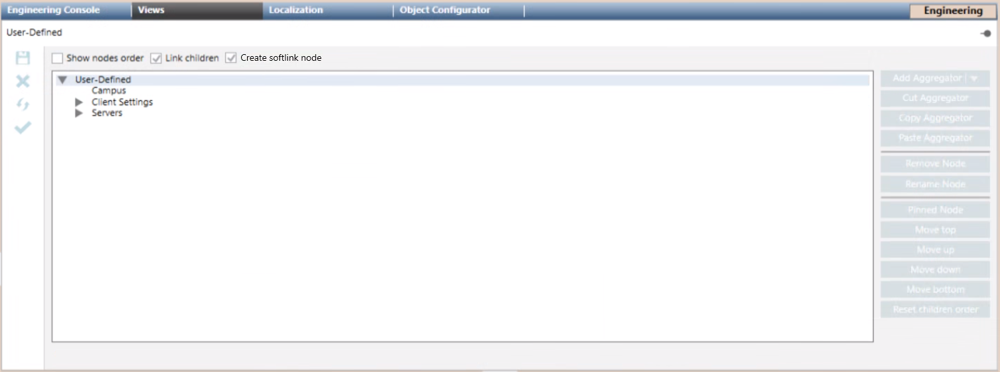
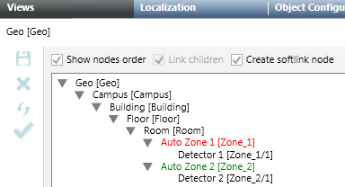

View Builder Workspace
In Engineering mode, when you select the view root or an aggregator in System Browser, the view builder workspace displays in the Views tab:
- If you selected the view root (for example, Project), the entire tree view displays.
- If you selected an aggregator (for example, Campus), the structure related to that nested level displays.

The preview area displays a preview of the tree view structure you are creating. Here you can manage the aggregators that compose the hierarchical structure of the view and specify the objects/subtrees you want to link from System Browser via drag-and-drop. The level where the object is being dropped is highlighted when you place the cursor over it. The mouse pointer changes, depending on the operation you perform (that is, invalid move, move, or copy).
Link children and Create softlink node
Depending on the view type, you may have one or both the following options for specifying the behavior of the view structure:
- Link children. This check box lets you activate a recursive link. The recursive link means that when you configure or modify a view by dragging an object from System Browser to that view, all the child nodes belonging to this level are also automatically added along with it.
- Create softlink node. A soft link is a symbolic link that contains a reference to a target object. This option—available only for the physical, logical, or user-defined view—lets you automatically select the Link children check box and activate the update of the view that you are configuring.
If you select the Create softlink node check box and then build the view structure, when you click Update View ( ), the view is automatically updated with any changes present in the target objects:
), the view is automatically updated with any changes present in the target objects: - Descriptions are updated (nodes in the tree structure are renamed)
- New elements are automatically linked to the structure. The related soft link is visually indicated in the tree structure in green. The path of the source target is available in a tooltip when you move the cursor over a soft link in the tree structure.
- Any targets moved or deleted display as broken links. The related broken soft link is visually indicated in the tree structure in red.

Note that there are limitations with regard to soft links:
- Be careful to select the Create softlink node check box before populating the view structure with subtrees or objects; otherwise the update view will not work.
- If the Create softlink node check box is selected, it is not possible to drag subtrees containing aggregators and soft links.
- It is not possible to drag soft links between different views.
- Copy and paste of levels does not move soft links.
- Any changes to the description of aggregators in the Management View win on description changes made in the other views.
Aggregators
Depending on the type of view, you can add different types of nested levels (aggregators):
View Type | Type of Aggregators |
Management View | Aggregator |
Application View | Aggregator |
logical view | Aggregator |
physical view | Aggregator |
user-defined view |
|
Views Buttons, Contextual Menu, and Keyboard Shortcuts
You can build the views structures in many ways, using the buttons, the contextual menu, or shortcut keys. Depending on the object model, not all the functions may be available to you.
Button | Contextual Menu Item | Keyboard shortcut | Description |
- | - | right arrow | Expand the tree structure in the Views tab. |
Add Aggregator |
| - | Add nested levels to help to customize and better organize the elements of the view structure. You can only add aggregators under the View root or under other aggregators. You cannot add aggregators under objects linked from System Browser. |
Cut Aggregator | Cut Aggregator | CTRL+X | Remove an aggregator from a location and place it in a buffer. |
Copy Aggregator |
| CTRL+C | Copy an aggregator to the clipboard. |
Paste Aggregator | Paste Aggregator | CTRL+V | Paste an aggregator (from buffer or clipboard) to another location. |
Remove Node |
| DEL | Remove the selected aggregator from the view. |
Rename Node |
| F2 | Display the Rename Node dialog box to change the Description of a node in the System Browser tree. You can do this for any System Browser view. Note that you can also change the description for a node from the Description field in the Main expander of the Object Configurator tab. |
Pinned Node | Pinned Node | - | Configure a specific order for child nodes to appear under their parent node. This allows arranging nodes to have fixed positions independent of the different languages, information display, or the creation of new nodes that affects the position of the existing ones. Note that when configured, this order takes precedence over the default sort order of name or description (depending on the System Browser view display: Description, Description [Name], Name, or Name [Description]). |
Move top | Move top | - | Move the selected sibling node at the top in a subtree. |
Move up |
| - | Move up the selected sibling node in a subtree. |
Move down | Move down | - | Move down the selected sibling node in a subtree. |
Move bottom | Move bottom | - | Move the selected sibling node at the bottom in a subtree. |
Reset children order |
| - | Restore the subtree default sort order (alphabetical). |
 Add Aggregator
Add Aggregator Copy Aggregator
Copy Aggregator Remove Node
Remove Node Rename Node
Rename Node Move up
Move up Reset children order
Reset children orderYou can also:
- Rearrange the structure of the nested levels (aggregators) as follows:
- Select the nested levels by pressing CTRL or SHIFT and clicking, then move them to the desired position in the preview.
- Move the nested levels using cut, copy and paste actions.
- Click to highlight nodes in System Browser that are linked to views.
Sibling Nodes Sort Order
You can copy sibling nodes in a subtree by pressing CTRL and clicking.
You can also:
- Sort sibling nodes in a subtree of the view structure as follows:
- Drag-and-drop nodes to a different position in the same subtree by clicking and moving a node (move up, move down, move top, or move bottom).
- Select a node by pressing S and clicking, then move it to the desired position in the same subtree.
- Pin a sibling node in a subtree to a fixed position regardless of the current sorting . Selecting the Show nodes order check box on the top left, you can view the values of the resulting order.
Note that:
- Changes to the sibling nodes order are reflected in the relevant System Browser view.
- The default sort order (alphabetical) is based on the user’s language setting.
- Any type of sibling nodes can be sorted, soft links included.
- If no sibling nodes are pinned in a subtree (position = 0), the structure in the Views tab and System Browser follow the alphabetical order.
- The multiple selection of sibling nodes is not supported for drag-and-drop operations.
- Drag-and-drop and copy operations are allowed only for the aggregators. It is not possible to perform these operations on soft links.
- A soft link cannot be put under another subtree as well as a subtree cannot be put under a soft link.